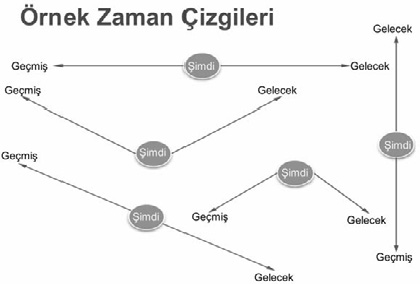

Sevgili beynim; sen doğru çalıştığında neleri başarabileceğimi biliyorum. Sen sorun yaşadığında karşılaşacağım güçlükleri de biliyorum. Olağanüstüsün, harikasın. Senin nasıl çalıştığını öğrendim. Sağlığın için gerekenleri bu bölümden sonra öğreneceğime ve öğrendiklerimi uygulayacağıma da söz veriyorum.
Duygularımı orta beyindeki sistemde yer alan küçük bir kimya fabrikasına benzettiğim hipotalamustan yararlanarak değiştirebileceğimi biliyorum. Davranışlarımı, yönlendirilmiş güç kullanarak üst beyindeki prefrontal korteksten değiştirebileceğimi biliyorum. Yönlendirilmiş güçleri benim seçtiğim ve belirlediğim programlar olarak kodlayacağım.
Program kodlamayı ve temizlik için gereken formatlamayı bu bölümde öğreneceğim. Yeni ve gelişkin bir programı kodlamak için önceden bilinçli ya da bilinçsiz olarak edindiğim yanlış programların temizlenmesi gerekiyor. Buna gereken izni vereceğini biliyorum. Senin bu değişime hazır hale gelmen için pozitif düşünme alışkanlıkları edindim. Bilinçli zihnim ile bilinçaltı zihnim arasındaki uyumu telkinlerle ve onamalarla sağladım.
Ben değişen ve gelişen günün koşullarını anlayabilen, aynı zamanda beni mutlu edecek bir program dâhilinde seninle olmak istiyorum. Eski programına göre benim mutluluğum senin görevin değildi. Önceden var olan ve sadece hayatta kalabilmeme yönelik programlarında değişiklikler yapmak istiyorum. Hayatın koşullarına göre gereken hâkimiyeti elimde tutmak istiyorum. Bunun için karmaşa içerisinde çözümü hemen gören bir idrak yeteneğine ihtiyacım var. Bunu da senin yeni donanımınla kazanacağımı biliyorum.
Senin sağlığın benim için çok önemli. Bu yüzden ikimiz için de gereksiz olan yanlış kodlamalara dayalı programların formatlanmasına direnç göstermeyeceğini biliyorum. Bunun için sana teşekkür ediyorum.
Beynin Formatlanması
Bütün olumsuz duyguların nedeni vücudun enerji sisteminin bozulmasıdır! Bunun sonucu olarak da bedeninde enerji tıkanıklıkları oluşur. Evde ki lavabo tıkalı ise açılmalıdır. Kömür sobasının boruları dolu ise temizlenmelidir. Doğalgaz kullanılıyor ise baca temizlenmeli ve havalandırma kontrol edilmelidir.
Beynimiz yaşadığı travmatik olayları fiziksel olarak algılayarak bize yararı olduğunu düşündüğü biyolojik programları başlatır. Ancak iyi niyetli bile olsa, sorunlu bir beynin ürettiği programın bize bir yararı olmaz.
Çünkü böyle bir beynin uyarı-tepki kimyasalı sistemi sağlıklı değildir. Üst beyinden gelen sakinleştirici veya durdurucu komutları, orta beyindeki algılama merkezi ayırt edemez. Endokrin sistemdeki bu bozukluk, uzun yıllar kaygı ve korkularla yaşamamıza neden olur. Biz de bunları hastalık olarak algılarız.
Niçin bize acı ve rahatsızlık veren alışkanlıklarımızı ve koşullarımızı değiştirmekte zorlanıyoruz? Niçin kendimizle ilgili değişimin zor olacağına inanıyor ya da mümkün olamayacağını düşünüyoruz? Çünkü çoğumuz, Nietzsche ’nin “Beni yok etmeyen, beni güçlendirir” paradigmasına sığınıyoruz. Çünkü beynimizdeki yazılıma virüs bulaşmış durumda.
Bu durumun sonucu olarak, doğal uyarı-tepki süreci işlemiyor. Bunun yerine psikolojik-beyinsel ve organ düzeyinde eş zamanlı, eski biyolojik programlar çalışmaya başlıyor. Otonom koruma sistemimiz iflas ediyor. Buluttan nem kapar halde; alıngan, saldırgan veya yaşam enerjimiz düşük bir durumda yaşıyoruz.
Zararsız bir durumu bile bir tehlike olarak algılayan beyin; “Savaş”, “Kaç” ya da “Olduğun yerde kal” gibi seçenekleri bize dayatıyor. Yaşanmış bir trafik kazası sonucunda birçoğumuz ehliyetimizi artık kimlik kartı olarak kullanmaya başlıyoruz. “Beynim böyle buyurdu ne yapabilirim? Artık araba kullanamam” diyoruz.
NLPBUS© Formatlama tekniğinde; tapingler yoluyla akupunktur noktalarına vurarak yaklaşık yetmiş mikro voltluk bir elektrokimyasal enerji ile beyni uyarmış oluruz. Bu özel noktalara yapılan vuruşlar beyindeki istenmeyen kodlamaları çözer. Mevcut programı temizler. Bilerek ya da bilmeyerek önceden kodlanmış olumsuz çapalar çökertilir. Mandallarından kurtulan olumsuz duygular da serbest kalırlar.
NLPBUS© Formatlama tekniğinde beyin yaşadığı olumsuz olaya odaklanırken; akupunktur noktalarına tapingler halinde vurularak negatif yükün hızlı bir şekilde boşalması sağlanır.
Taping deyince, baş-orta ve işaret parmaklarından oluşan, üçlü pati ile yapılan seri vuruşları anlatmak istiyorum. Akupunktur noktaları vücudumuzun yüzeye yakın elektrik direnci en düşük olan yerleridir. Bu nedenle meridyenlerin derinde gömülü olan bölümlerinden daha kolay ulaşılan özel noktalardır. Enerji kavşaklarıdır. Bundan böyle meridyen başları olan bu akupunktur noktalarına; şekildeki gibi, EFT noktaları diyeceğiz. EFT noktalarının yerlerini birkaç antrenman sonrasında bedensel olarak ezberlemiş olacaksın.
Bu noktalar; baş, burun altı ve çene üstü hariç bedenin iki yanında simetrik olarak yer alır. Bunlar; kaş başlangıç noktaları, gözaltı, şakaklar ve köprücük kemiği üstü noktalarıdır.
Geçmişe ait olumsuzluklar belirli zaman dilimlerinde zihnimizde kodlandığı için sorunlar yaşıyoruz. Zihnimizdeki bu olumsuz kodları çözümlemek için öncelikle yerlerini net bir biçimde belirlemeliyiz.
Bunun için oda duvarının bir bölümünü ekran olarak kullanacağız. Ekran karşısındaki bir sandalyede otururken, sorunlarını zihninde yeniden yaşadığında önceden öğrendiğimiz göz erişim ipuçlarını kullanarak sorunlu noktalara ulaşacağız. Uygulamanın detayları anlaşılır şekilde aşağıda adım adım açıklandı.
Sorun yaşadığın andaki bakış pozisyonun zihninde kodlanmış virüslü noktalara karşılık gelir. Bu yüzden sorun yaşadığın andaki bakış pozisyonunda EFT noktalarını tapinglerle uyarınca, bu sinyaller sorunlu bölgede temizlik yapmaya başlar. Virüslü noktalara uygulanan bu tapingler meridyenlerini harekete geçirerek adeta bir radyoterapi işlemini başlatır. Sinyaller bu şekilde beyne elektriksel yolla ve anlık olarak ulaştırılır. Tepki olarak gelen elektriksel sinyaller de anlık çözümler oluşturur. Bu, anlık değişim, NLPBUS© Formatlama uygulamasının başarısındaki en temel faktördür.
Karar, eyleme dönüşürse karardır. Bir düşünceyi gerçekleştirmeyi düşünmek ile karar verip eyleme geçmek arasında bir zamana ihtiyaç vardır. NLP’de birçok değişim, elektrokimyasal yollarla gerçekleşir. İşte bu yüzden değişimleri anlıktır.
Sorunlu noktalara karşılık gelen olumsuz kodlamalar birden çok olabilir. Bu durumda göz hareketlerini bir MR taraması yapar gibi takip ediyoruz. Sorunlu noktaya eriştiğinde senin uyarınla o noktayı işaretliyoruz. O duyguyu yaşadığında sen kendindeki farklılığı hissedersin. Sen o noktaya bakarken EFT noktalarına tapinglerle sinyaller yollayarak adeta ışınlama ile temizlik yapıyoruz.
Sorun olan duygunun kodlandığı yerde bilinçaltın sana duygu değişimini bir şekilde haber verir. Kendini o an iyi hissetmezsin. O bakış pozisyonunda bu durumu yaşadığını belirtmelisin. Uyarınla hemen o noktayı ekranda işaretliyoruz. Sonra sen o noktaya bakarken EFT noktalarına taping uygulamasına geçiyoruz.
Bu şekilde tüm ekranı tarıyoruz ki, tüm olumsuz kodlara ulaşabilelim. Tarama işlemini; sanki duvardaki ekranın tamamında solfej çizgileri varmış da, sen notaları sağdan sola, sonra soldan sağa takip ediyormuşsun gibi düşünebilirsin. Bu şekilde bakış pozisyonuna karşılık gelen, kaç tane sorunlu nokta bulmuşsak onlara da aynı işlemleri tekrar ediyoruz. En nihayetinde sen, istemediğin duyguya artık ulaşamadığını hissedene kadar bu temizliği sürdürüyoruz.
Karar, eyleme dönüşürse karardır. Bir düşünceyi gerçekleştirmeyi düşünmek ile karar verip eyleme geçmek arasında bir zamana ihtiyaç vardır. NLP’de birçok değişim, elektrokimyasal yollarla gerçekleşir ve bu yüzden de değişim anlıktır.
NLPBUS© Formatlama tekniği, parmaklarının özel akupunktur noktalarına uygulanan ritmik vuruşlar ile ruhun arınıp tazelendiği bir yöntem olup;
Hızlıdır; Birçok eski ya da yeni yukarıda saydığım yaşanması muhtemel sorunlar; bir ya da iki seansta çözümlenir. En inatçı tıkanıklıklar bile yirmi bir günde sorun olmaktan çıkar.
Etkilidir; Uzun süredir başa çıkılamamış; korkular, takıntılar ve derin üzüntüler tümden ortadan kalkar. Kalıcı bir iyileşme sağlanır.
Yumuşak ve Naziktir; Çünkü sadece parmak uçları ile özel EFT noktalarına vurularak beyne uyarılar yollanır.
Güvenlidir; Bedeninde; çekme, itme, döndürme vb. uygulamalar yapılmıyor. Vücuduna ilaç veya herhangi bir kimyasal madde verilmiyor. Akupunktur da olduğu gibi iğne uygulaması yapılmıyor.
Özeldir; Uzun terapi seanslarında tüm özel yaşamını anlatman gerekebilirken, EFT’de çözmek istediğin sorununa sadece senin odaklanman yeterlidir. Sorunu, uygulamayı yapan kişinin bilmesi gerekmiyor.
Kolaydır; Öğrenmesi ve uygulaması basittir. Uygulamayı 1-2 egzersizle kendi kendine de yapabilirsin...
Yeni Sorunlara Yol Açmaz; Aylar,hatta bazen yıllar süren psikolojik terapilerle, geçmişte yaşadığın olayların acısını tekrar tekrar deneyimlemen gerekmez. Bu tür bir destek alan kişiler; suçluluk, pişmanlık, kendine dönük öfke vb. duyguları terapi sonrasında da sahiplenilebiliyorlar.
NLPBUS© Formatlama tekniğini metaforlar kullanarak şu şekilde açıklayabiliriz;
Sorun: Soba yanmıyor. Çünkü boru, isle dolu.
Çözüm: “Borunun tıkandığı yerlere vur ve temizle”
Başın ağrıdığı zaman kendi kendine, “Eyvah! Yine başım ağrıyor!” diye söylenme. Başında bir tıkanıklık var. Acaba vücudun hangi mesajı veriyor? Boğazın ağrıdığı zaman, buna sıradan bir ağrı gibi yaklaşmak yok! Acaba söyleyemediğin neler var? Tıkalı olan duygu hangisi? İşte olması gereken yeni düşünme şekli budur! Bu durum, iğnesiz akupunkturdur.
NLPBUS© Formatlama Tekniği sonucunda enerji meridyenleri uyarılarak, enerjinin meridyenlerde şelale gibi akması sağlanır. Enerji akımlarının durağanlığı ya da blokajları ortadan kaldırılır. Kanallardaki aksamalar giderilince; tıkanıklıklar açılarak bedensel enerji dengelenir. Enerji dengesi sağlanmış bedende, haliyle olumsuz duygulara da yer kalmaz.
Çocuklar neden hiç yorulmuyorlar? Çünkü hiç enerji tıkanıklıkları yok! Bu yüzden yaşamları daha kolay ve daha keyifli!
Bu giriş bilgilerinden sonra şimdi NLPBUS© Formatlama uygulamasına geçelim. Okurken uygulamayı kendi üzerinde test etmek, öğrenmeyi çok daha kolay hale getirir.
NLPBUS© Formatlama Tekniği ile Beynin Formatlanması Uygulaması:
Hazırlık:
Hazırlık için açıklama:
Format Ekranı Oluşturma: Tüm canlandırmaları yapabileceğimiz bir zihinsel ekran hayal et. Bu ekranı, göz erişim ipuçlarından yararlanarak tarama yapacağımız bir alan olarak düşün.
Bir oda duvarı ya da perdeden oluşabilecek ekran ölçülerinin tahmini için şunu deneyebilirsin. Gözlerin kulak hizasında yatay olarak; en sol ve en sağda ne kadar uzağı görebiliyorsa bu ölçüde bir uzunluk belirle. Gözlerin; alnının üstünde ve çene altında ne kadar bir uzaklığı görebiliyorsa bu derinlikte bir uzunluğu işaretle. Tahmini olarak 2 - 3m x 2 - 3m boyutlarında düşey düz bir alan oluştur.
Format Sandalyesi ve Koltuğu: Ekranın yaklaşık 2m önünde arkalıklı ve arkası düz bir koltuk ya da sandalye.
İşaret Kalemi: Göz taraması yaparken sendeki duygu değişiminin başladığı noktayı işaretleyeceğimiz kalem ya da sert bir cisim.
Güvenilir Bir Yardımcı: İşaretleme, tarama ve tapinglerde sana yardımcı olabilecek güvenilir bir kişi. Tüm bu süreci öğrenerek kendi kendine de uygulayabilirsin.
Tetikleyici Bir Hikâye: Yaşadığın sıkıntıyı anlatan kısa bir metin. Tüm çıplaklığıyla ve tetikleyici bir biçimde… Gerekirse abartılı, seni o duruma sokan kısa bir hikâye. Hemen anımsanmaya uygun ve sadece bir paragraf. Bu metin ne kadar açık, gerçekçi ve sana özel olursa sen de o derece etkili bir değişimin gerçekleşeceğini fark edebilirsin.
EFT Noktalarını Tanımak: Ön hazırlık için resimdeki EFT noktalarını, tepe bölgesinden başlayarak, köprücük kemiği noktasına kadar olan tüm bölgelere ayrı ayrı öğrenme amaçlı tapingler uygulaman her bakımdan yararlıdır. Tapinglerin şiddeti fazla olmasın. Ancak tapinglerden dolayı gelişen enerji yayılmasını; yüzünde veya o bölgede yeterince hissetmelisin.
Bu yedi noktadan hangisinde daha duyarlı olduğunu bu alıştırmalarda fark edebilirsin. Bir noktada kendini diğerlerindekinden daha iyi hissedebilirsin. O nokta senin enerji düğümündür. O nokta, senin tercihli meridyen kavşağındır. Bu noktalara uygulanan tapingler, meridyenlerini harekete geçirir. Sakinleşir, rahatlarsın! Her geçen gün kendini; daha, daha da iyi hissetmeni sağlarsın. Yaptığın tüm vuruşlar, senin daha iyi bir ruh haline erişmene yardım eder. Bunu fark etmen çok önemlidir.
NLPBUS© Formatlama Uygulaması:
Hedef: Beynini olumsuz kayıtlardan temizleyip, hayatına kalıcı değişimler ve mutlu yenilikler getirebilmek. Zihinsel özgürlük kazanmak!
Süre:15-20 dakika.
NLPBUS© Formatlama Prosedürü:
Kabullenme, “Bu…Sorunuma rağmen, kendimi tamamen ve derinden kabul ediyorum” gibi bir kalıptır.
Belki de sobanın borusu tıkalı. Ancak boru sağlam! Boruya tıkalı olduğu yerden vuracağız.
“Bu…Sorunuma rağmen, kendimi tamamen ve derinden kabul ediyorum” Boşluğu, yaşamış olduğun soruna dair bir tanımlama cümlesi ile doldurabilirsin. Örneğin; kilo sorunun varsa, kilomu seviyorum değil; “Kilo sorunumun olduğunu biliyorum ve buna rağmen kendimi derinden kabul ediyorum” şeklinde bir cümle oluşturmalısın.
Şimdi gözlerini açabilirsin. Uygulamayı yapan kişi, ekranın sol üstünden itibaren, yatay biçimde işaret ve orta parmaklarını bitişik şekilde yavaş yavaş sürükleyerek işlemi başlatacak. Sen de başını oynatmadan gözlerinle takip edebilirsin. Yardımcının parmakları soldan sağa doğru, yatayda en sağa gelince 10-15 cm aşağı inerek sağdan sola doğru işlemi tekrarlayacak. Ekranın tamamı bu şekilde taranacak.
Soruna neden olan duygunun kodlandığı yerde, bilinçaltı zihnin sana değişimi haber verir. Kendini iyi hissetmezsin.
a başınla bir işaret ver. Yardımcı, uyarınla o noktaya işaretini koyarak yanına gelecek. Sen o noktaya bakarken tercihli EFT noktana format vuruşlarını uygulayacak.
Farklı EFT Noktalarına Tapingler Uygulamak:
Farklı EFT noktalarına tapingler uygulanınca, eğer duygu puanın sıfıra inerse, başka bir bölge taramasına geçilebilir. Yeniden hikâyene dönüp, “Hazırım” işaretini verdiğinde, kaldığın yerden taramaya devam edilebilir.
Her sorunlu noktada, işlem tekrar edilmelidir. Kaldığınız noktadan itibaren, uygulamayı yapan kişi parmaklarıyla işleme devam eder. Eğer ekranın en soluna gelmişse, 10-15 cm aşağı inerek bu kez de yatay olarak sağa doğru parmaklarını sürüklemelidir. Sen de kendindeki değişimi uygulayıcıya bildirmek üzere, sadece gözlerinle parmaklarını takip edebilirsin. Ekranın en sağına gelmişse yeniden 10-15 cm aşağı inerek sola doğru hareketi yineleyebilirsin.
Muhtemelen önceki rahatsız olduğun noktaya yakın yerlerde yine yardımcıyı uyarmalısın. Yardımcı bu durumda ne yapıyordu? Hemen o noktayı işaretleyip, göz pozisyonunu bozmamanı isteyerek yanına geliyordu. Rahatsız olduğun o yeni noktadaki formatlama işlemi için yeniden tapinglere başlıyordu. Bu şekilde ekranın en alt sırasındaki ulaşılabilir en son noktaya kadar temizlemeyi sürdürüyoruz.
Kilitlenmenin Kaldırılması:
Duygu yoğunluğu sıfıra inmemekte direnirse telaş yok! Çünkü çözüm var. Formatlamanın çalışmasını engelleyen kilidi açan maymuncuk gibi bir yöntemimiz var. İhtiyaç halinde başvuracağız. Üstelik kilit ve anahtarı da sende!
Eğer duygu puanın herhangi bir noktada sıfıra inmemekte direniyorsa sistem kilitlenmiştir. Formatlamadan %100 sonuç alabilmek için kilidin açılması gereklidir. Bunun için iki adımlık bir işlem uygulamamız gerekiyor. Kilidin açılması için, 1.adım olarak resimdeki tender spot olarak gösterilen sıfır ya da hassas noktalarını ovalamalısın.
Şekildeki gibi bedenimizin üst kısmında, göğüs üzerinde iki hassas nokta var. Bunlara, “Sıfır Noktaları” deniyor. Burayı biraz ovaladığında hafif acı hissedersin, çünkü burası lenf tıkanıklıklarının oluştuğu yerdir. Psikokinesiyoloji de B27 noktaları olarak geçer.
Tender spot ve underarm noktalarının her gün 20-30 saniye ovulması çok yararlıdır. Bu adımı kilidin açılmasını kolaylaştırıcı bir ön hazırlık gibi düşün. Adeta paslanmış kilidin yağlanması gibi.
Kilidin açılması için 2. Adım olarak, karate chop noktalarının uyarılması ve bu anda problemin iç ses ile kabullenilmesi gerekiyor.
Sorunun kabullenilmesi için;
“Bu ………..(sorunuma) rağmen, kendimi tamamen ve derinden kabul ediyorum” kalıbını sesli olarak üç kez tekrarlamalısın.
Eğer sağlaksan, sol elinin karate chop noktasına sağ elinle karate veya kesme vuruşları yap. Solaksan bu işlemin tersini yapmalısın.
Yeniden hikâyene dönebildiğin ve duyguyu hissedebildiğinde kilit açılmış demektir. “Hazırım” işaretini verebilirsin. Kaldığınız yerden formatlamayı tamamlamak üzere, uygulamayı yapan kişi taramayı sürdürebilir. Her sorunlu noktada tapinglerle temizleme işlemi tekrar edilebilir.
Bu şekilde ekranın en alt sırasındaki ulaşılabilir son noktaya kadar temizlemeyi sürdürüyoruz. Duygu puanın her yerde sıfıra indiğinde formatlama %100 başarıyla tamamlanmış demektir.
Yeni ve gelişkin bir programın zihnine kodlanması için önceden bilinçli ya da bilinçsiz olarak edindiğin yanlış programların temizlenmesi gerekiyordu. Bunu başarmış oldun.
NLPBUS© EFT ile Sorunlardan Kurtulma
Duygusal Özgürleşme Tekniği (EmotionalFreedomTechnique) adı verilen iğnesiz akupunktur olarak gördüğüm EFT’ye ben,“Enerji Psikolojisi Tekniği” diyorum. NLPBUS© EFT’de duyusal egzersizler akupunktur ile bileştirilerek, psikolojiye uyarlandı ve göz hareketleri eklemlendi.
Tanıdığım terapist arkadaşlarımdan bazılarının tek başına EFT uygulamasıyla başarılı sonuçlar aldıklarını biliyordum.
EFT’nin gücünün arttırılması nasıl mümkün olabilirdi?
“‘Voltran, Voltran, Voltran” diye üç defa bağırıp, beş aslanın birleşmesiyle oluşan büyük robotun oluşturulması aklıma geldi. “NLP”, “Piki”, “EMDR”, “EFT” ve “Strateji” tekniklerinden bir sentez yaptım. Başı oluşturan siyah aslan EFT oldu.
Uygulamalarda denediğim ve en iyi sonuç aldığım tekniğe NLPBUS© EFT adını verdim.
Bu teknik ile beynini olumsuz kayıtlardan temizleyip, hayatına kalıcı değişimler ve mutlu yenilikler getirebilirsin. Yaşamına yeniden yön verebilirsin.
Çok uzun süredir devam eden “Panik-Atak” rahatsızlığının hızla kontrol altına alınabileceğini biliyor muydun? Travma sonrası yaşadıklarını, fobilerini, istenmeyen alışkanlıklarını hızla terk edebilirsin.
Utangaçlık, kendinle barışmak, sahne korkusu, yanlış ilişkiler, yanlış içsel ses, parasızlık, kilo vb.pek çok problemi,bir ya da birkaç seansta çözebilirsin.
Tekniğe bazı durumlarda başka NLP tekniklerini de eklemlemek gerekebilir. Ancak yukarıda saydığım birçok sorun, tek başına bu tekniklerle çözülebilecek yapıdadır.
NLPBUS© EFT Uygulaması
1-Zihin ve bedenin eklemlenmesi:
Ekran önündeki sandalyeye; sağlaksan sağ ayağın sol ayağının üstüne, sağ elin de sol elinin üstüne gelecek biçimde çaprazlayarak otur.
2- Hassas Noktaların Uyarılması:
B27 noktaları ya da hassas noktalarını 10-15 saniye boyunca ovala.
3-Kabullenme-Yüzleşme:
Gözlerini hafifçe kapat. Bel kemiğini hissederek sandalyede dik otur. Önceden hazırladığın kısa, net ve tetikleyici hikâyeni anımsa. Sonra problemi tek cümleye indirip onu kabullen ve sorununla yüzleş.
Kabullenme, “Bu …(sorunuma) rağmen, kendimi tamamen ve derinden kabul ediyorum” gibi bir kalıptır.
Sorun; özgürleştiğinde seni şimdi ve ebediyen mutlu kılacak herhangi bir negatif duygu veya düşüncedir. Anımsadığın zaman seni depresif biri yapan, yalnız senin bildiğin bir şeydir o. Bir sancı, bir korku, bir hastalık veya bir fobidir…
“Bu …(sorunuma) rağmen, kendimi tamamen ve derinden kabul ediyorum” Boşluk bölümüne yaşadığın problemi ekleyebilirsin.
4- NLPBUS© EFT Başlangıcı:
Problemli duyguya eriştiğinde, formatlama ekranı önündeki yardımcıya başınla işaret ver. Bu senin, “Beynim duyusal özgürleşmeye hazır” işaretindir.
5- Bilinçaltı Haberleşme:
Uygulayıcı, ekranın sol üstünden itibaren, yatay biçimde işaret ve orta parmaklarını bitişik şekilde yavaş, yavaş sürükleyerek işlemi başlatmalıdır.
Gözlerini aç ve başını oynatmadan gözlerinle yardımcının parmaklarını takip et. Soruna neden olan duygunun kodlandığı yerde bilinçaltın sana değişimi haber verir. Hissettiğin duygu değişimine odaklan. Sorunlu noktada yardımcıya başınla işaret ver.
6- Duygu Puanlama:
Yardımcı, uyarınla o noktaya işaretini koyarak yanına gelecek. Sen o noktaya bakarken tercihli EFT noktana format vuruşlarını (tapingler) uygulayacak. Tapingler uygulanırken sen de duygu yoğunluğuna 0-100 arasında puanlar verebilirsin.
7- Göz Erişim Hareketleri ve Onay:
Yeniden hikâyene dönüp,“Hazırım” işaretini verdiğinde; göz hareketleri ile kendini onaylama işlemi aynı anda uygulanacak. Kendini onaylama örnekleri ve formatı şöyledir:
“Şu an farkında olduğum ya da olmadığım tıkanıklıklarımın açılmasını kabul ediyorum”
“Korkularımla isteyerek vedalaşıyorum”
“İdeal bir birey olmama izin veriyorum”
“Ben değerliyim ve yeterliyim” gibi ifadelerdir.
Göz Erişim Hareketleri:
Gözlerini;
Kapat, Aç ve Karşıya Bak / Kapat, Aç ve Karşıya Bak/ Kapat, Aç ve Karşıya Bak. Her defasında onay cümleni sesli olarak söyle.
Gözlerinle;
Önce sağa aşağıda görebildiğin yere kadar bak / sonra sol aşağıda görebildiğin yere kadar bak. Bu göz hareketlerini yaparken kendi içine dön ve suskun kal. Bu işlemi üç kez tekrarla.
Gözlerinle;
Sol yukarıda, arkanı görecekmişsin gibi bak/ Sağ yukarıda arkanı görecekmişsin gibi bak/ Yukarıda tepe noktanı görecekmişsin gibi bak. Bu göz hareketleriyle kendi içine dön, onay cümleni sessizce üç kez söyle.
Burnunu çok büyük bir saatin merkezine yapışmış gibi düşünürken, gözlerinle çizebileceğin en büyük saatin çemberini çiz. Saat yönünde her rakamı mutlaka görmeye çalış.
Bu sırada içinden onay cümleni büyük bir inançla tekrar et.
Bu işlemi saat yönünün tersi yönde tekrarla.
8- Değerlendirme- Kilit Açma- EMDR
Problemin o noktadaki sıkıntısı giderek azalacaktır. Sen,“Sıfır” dediğinde uygulama bırakılmalıdır. Sen de derin bir nefes alarak yeni bölge taramasına hazır hale gelebilirsin.
Duygu yoğunluğun sıfıra inmemekte direnirse telaş yok! Çünkü çözüm var.
EFT’yi kilitleyen, EFT’nin çalışmasını engelleyen kilidi açan maymuncuk da sende... Formatlama işleminde kullandığımız karate chop uygulaması... Sonra EFT noktalarından birine tapingler uygulayıp EMDR eklemlenecek ve sorun çok büyük ihtimalle tamamen sıfırlanacak.
9- Geleceğe Uyarlama:
Geleceğe uyarlamak bir çapalama tekniğidir. Gelecekte yaşayacağın o mutlu ânı düşle. Çapanın etkili olabilmesi için; görsel, işitsel ve dokunsal temsilleri kullan. Bu görsel bir pratiktir ama bundan öte bir şeydir. Gelecek bir zaman diliminde, kendini bir şeyleri yaparken hayal etmelisin. Bu hayali, bir çapaya dönüştüren şudur: Kişiye bir çapalama yaparken bedenine dokunuruz. Ama gelecekteki koşullarda kişiye dokunamayız. Bu bağlamda çapayı atabileceğimiz başka bir şey bulmalıyız. Eğer bu kişi öğrenci ise ve bir kalem kullanıyorsa, kalemi eline aldığı andaki duygu bir çapadır. Kalem, o duyguyu ortaya çıkaracak olan çapadır. Yani anahtar, gelecekteki durumda kişilerin becerilerini kullanacağı şeyi bulmak ve ona çapa atmaktır.
Ne zaman, ne şekilde bir çapa oluşturacağımızı belirledikten sonra, o şeyi yaparken kullanacağımız bir nesneyi gözümüzün önüne getirir ve o duyguya çapa atarız. O koşullarda doğal olarak gerçekleşecek bir şeyi gözümüzün önüne getirir ve oraya çapalarız. Uygulamada daha pratik bir yöntemin uygulamasını öğreneceğiz.
10- Duygunun Test Edilmesi:
Hikâyeni anımsa ve duygunu puanla. Eğer “Sıfır” ise bu harika! “Voltran, Voltran, Voltran” diye sesli olarak bağır.
Şimdi ilk uygulama olarak yaşanmış bir korkunun oluşturduğu travmanın NLPBUS© EFT ile çözümlenmesi sürecine bir bakalım.
NLPBUS© EFT Uygulaması:
1-Zihin ve Bedenin Eklemlenmesi
Ekran olarak seçtiğin duvarın karşısındaki sandalyeye sırtını tam yaslayacak biçimde otur. Sağlaksan; sağ elin, sol elinin, sağ ayağın da sol ayağının üstüne gelecek biçimde çaprazlama yap. Solaksan bu işlemin tersini yap.
Bu hareketle; beynindeki yanlış kodlamaları temizlemek için, zihin ve bedenini eklemledik.
2- Hassas Noktaların Uyarılması
Uygulamaya; sıfır ya da hassas noktalarını (tender spot) ovalayarak, başla.
3-Kabullenme-Yüzleşme
Gözlerini hafifçe kapat. Bel kemiğini hissederek ve dik bir biçimde otururken el ve ayakların yine çapraz kalsın. Tetikleyici hikâyene odaklan.
Önceden kaleme aldığın; net, konuşma dilindeki sorununu zihninde yaşa. Problemle temas kurmak ve sorunlu alanlara yapılacak tapinglerin temizleyici etkisini yönlendirmek için problemin adını kullan. Sonra da onu kabullen. Bunun için bir cümle kalıbı kullandığımızı anımsa.
Bana gelen bir e-postayı aynen aktarıyorum. Bu ifadenin abartılmasına gerek bile yok, çünkü sorun çok net. Kendiliğinden, kendini tetikleyen bir hikâye...
“…üniversitesi… Tıp Fakültesi 3. sınıf öğrencisiyim.2.sınıfta anatomi dersinde kadavrayı incelerken bayıldım ve her şey ondan sonra başladı. Ölümden ve ölüden korkmaya başladım. Korkular zihnimde çok büyüdü ve benim için hayat yaşanmaz bir hal aldı. Neticede her şeyden soğudum ve bu durum hiç geçmeyecek diye düşünmeye başladım.3.yıl, sınıfta kaldım. Sonraki sene de okula ara verdim. Ne zaman üniversiteye tekrar başlamayı düşünsem kötü oluyorum, beni bir sıkıntı ve korku sarıyor. 2 senedir üniversite sınavına giriyorum ancak korkum nedeniyle başka bir bölüme de gidemiyorum.”
Burada sorun çok net olarak kendini belli ediyor: Her an, kadavranın görüntüsü gözünün önüne geliyor. Gece, gündüz korku ile yaşıyor.
Sorunun tek cümlelik ifadesi; “Her an kadavra gözümün önüne geliyor ve gecegündüz korkuyorum” şeklinde tanımlanabilir.
Şimdi de problemin, kabullenme kalıbını kullanarak kabullenilmesi gerekiyor. Sorunun kabullenilmesi kalıbı; “Bu …(sorunuma) rağmen, kendimi tamamen ve derinden kabul ediyorum” şeklindeydi.
Bu kalıba göre kabullenme ifadesi şöyle olabilir: “Her gece gördüğüm berbat kâbuslara rağmen, kendimi tamamen ve derinden kabul ediyorum”
Ancak kabullenme ifadesinin söylenmesi çok doğal ve inandırıcı olmalı. Bilinçaltı zihnin senin dostundur ve ona yalan söyleyemezsin. Öncelikle sen inandırıcı olmalısın. İçtenlikle yapılan bir eylemle, görev gereği yapılan bir eylemin farkını en iyi bilinçaltı zihnin fark eder. Bu nedenle kabullenme için, “Sorunumu biliyorum, sorunuma rağmen kendimi kabul ediyorum” farkındalığında olmalısın.
4- NLPBUS© EFT Başlangıcı
Kabullenme sayesinde sorununla, zihninde yüzleşmiş olursun.
Bilinçaltın ve sen artık olumsuzluklardan arınmaya hazır hale geldiniz. Bu durum NLPBUS© EFT uygulamasının başlangıcıdır. Yardımcıya, sorununla ilgili duyguya girdiğini, onunla bağlantı kurduğunu bir şekilde iletmen gerekiyor. Arınmaya hazır olduğunu beden dilinle işaret edebilirsin.
5- Bilinçaltı Haberleşme
Güvenilir yardımcın veya danışmanın senin işaretini alınca, hafif bir biçimde gözlerini açmanı söyleyecektir. Tarama ekranında işaret ve orta parmağını en üst sol baştan itibaren yavaş bir yürüme hızında sürüklemeye başlayacak. Sen de yardımcının parmaklarını, başını çevirmeden gözlerinle takip edebilirsin. Bu sırada yaşadığın duygu değişimini içsel biçimde izleyebilirsin.
Sorununu kodladığın göz erişim pozisyonuna ulaştığında, duygu değişimin başlayacak. Duygu yoğunluğun artacak. Rahatsızlığını somut durumdaki şiddetten belki de daha da yoğun yaşayabilirsin. Bu anda yardımcını başınla uyarıyorsun. O da rahatsız olduğun göz erişim noktasını bir çarpı işaretiyle belirliyor. Bilinçaltının seni, senin de yardımcını uyarmanla, sorun yaşadığın noktada, işaretleme yapılıyor.
6- Duygu Puanlama
Sorunlu noktada gözlerin o pozisyonda iken yardımcın yanına gelerek, EFT noktalarına format vuruşlarını uygulayacak. Bu noktaların bir uygulama sırası yok. Tamamen kişiye özel… Herkes bir ya da birkaç noktadan en doğru uyarılma sinyalini alabilir. O nokta ya da noktalar kişiye özel tercihli EFT noktalarıdır.
Tercihli EFT noktalarına uygulanan tapinglerin uyarıcı etkisiyle bir rahatlama hissetmeye başlarsın. Duygu yoğunluğunun giderek azaldığını fark edebilirsin. Tapingler uygulanırken sen de duygu yoğunluğuna 0-100 arasında bir puan vereceksin. Sıfır düzeyine gelince, o noktadaki uygulama sonlandırılacak.
En çok, şakaklarına yapılan tapinglerden etkilendiğini varsayalım; Şakaklarına EFT uygulaması yapılırken sen de duyguna 0-100 arasında puan vereceksin. 100 ile başlamış ol...
Vuruşlar sayesinde hemen kendini iyi hissetmeye başlarsın. Çünkü temizlik EFT düzeyinde başlamış durumdadır. 10 saniye içinde duygunun şiddeti 100, 95, 80, 68, 50, 38, 22, 10, 4 ve 0 olabilir.
Ya da 100, 95, 80, 68, 60, 60, 58… gibi inerken bir yerde takılabilir. Bu sırada yardımcı, tapinglere devam ediyor ancak puan değişmiyorsa; “Devam et, ya da başka noktaya geçelim gibi”bir geri bildirimde bulunabilirsin. Böylelikle EFT’yi senin yönettiğini de fark etmiş olursun.
Yeni bir EFT noktası için köprücük kemiği üstünü seçmiş olduğunu varsayalım; Köprücük kemiğine EFT uygulanmaya başlayınca, puanlarını yeniden söylüyorsun.
Örneğin; 58 de takılı kalmıştınız. Burada duygu şiddetini başlangıçta 65 olarak hissedebilirsin.
Bu noktadaki EFT uygulaması başlatıldığında puanların, 65, 50, 35, 24, 16, 10, 7, 4, 2, 1 ve 0 olsun. Duygu puanın sıfıra indiği için, uygulamayı sonlandırıp, derin bir nefes almanı istiyoruz.
Tarama ekranında en alt ve en uç noktaya gelinceye kadar, kaldığınız noktadan itibaren yardımcı, parmaklarını sürüklemeye devam edecek.
Örneğin; ekranın en soluna gelmişse 10-15 cm aşağı inerek bu kez yatay sağa doğru parmaklarını sürükleyecek. Yardımcına duygu değişimini bildirmek üzere, sen de gözlerinle parmakları takip edeceksin. Ekranın en sağına gelinmişse 10-15 cm aşağı inilerek bu kez de sola doğru işlem tekrarlanacak. Muhtemelen önceki rahatsız olduğun noktaya yakın yerlerde yine yardımcını uyaracaksın. Yardımcın bu durumda ne yapıyordu? Hemen o noktayı işaretleyip, göz pozisyonunu bozmamanı isteyerek yanına geliyordu.
Rahatsız olduğun o yeni noktadaki EFT işlemi için yeniden tapinglere başlıyordu. Bu şekilde ekranın en alt sırasındaki ulaşılabilir en son noktaya kadar temizlemeyi sürdürüyoruz. Duygu puanın her yerde sıfıra indiğinde EFT uygulamasına son veriyoruz.
7- Göz Erişim Hareketleri ve Onay
EFT’nin etkinliğini arttırmak üzere bu bölümde göz erişim hareketleri ve kendini onaylamayı birlikte yapacağız. Onaylama örneklerimizi bazı göz erişim hareketleri sırasında söyleyeceğiz. Bazılarında ise suskun kalacağız. Sadece sağ aşağı ve sol aşağı hareketlerde susacağız.
Onaylama örneklerimiz aşağıdaki gibi olabilir:
“Şu an farkında olduğum ya da olmadığım tıkanıklıklarımın açılmasını kabul ediyorum”
“Korkularımla isteyerek vedalaşıyorum”
“İdeal bir birey olmama izin veriyorum”
“Ben değerliyim ve yeterliyim”
Göz Erişim Hareketleri 4 aşamalı olup şunlardan oluşuyor:
a-Gözlerini;
Kapat, Aç ve Karşıya Bak/ Kapat, Aç ve Karşıya Bak / Kapat, Aç ve Karşıya Bak
Her defasında karışık olarak:
“Şu an farkında olduğum ya da olmadığım tıkanıklıklarımın açılmasını kabul ediyorum”
“Korkularımla isteyerek vedalaşıyorum” onaylamalarını hissederek ve sesli bir biçimde söyle.
b-Gözlerinle;
Önce sağ aşağıda görebildiğin yere kadar bak.
Sonra sol aşağıda görebildiğin yere kadar bak.
Bu göz hareketlerinde kendi içine dön. 3 kez tekrarla ve suskun kal.
c-Gözlerinle;
Sol yukarıda, arkanı görecekmişsin gibi bak.
Sağ yukarıda arkanı görecekmişsin gibi bak.
Son olarak, yukarıda tepe noktanı görebilecekmişsin gibi bak.
Ancak bu göz hareketlerini uygularken herbirinde kendi içine dön ve,
“İdeal bir birey olmama izin veriyorum”
“Ben değerliyim ve yeterliyim” gibi onaylama cümlelerini hissederek, sessiz ve içinden söyle.
d- Gözlerle Düşsel Çember Çizimi:
Bu uygulama beynin her iki lobunu efektif biçimde uyarır. Bunun için gözlerini hafifçe kapatarak, burnunu büyük bir duvar saatinin merkeziymiş gibi düşün. Gözlerinle çizebileceğin en büyük saatin çemberini çiz. Zihninde saat yönünde her rakamı mutlaka görmeye çalış. Bu sırada içinden istediğin onay cümleni inanarak söylemelisin.
Saatin zıt yönünde aynı uygulamayı tekrarla. İstediğin onay cümleni içinden ve inançla söyleyebilirsin.
İç seslendirmen ve saatin her rakamındaki onaylamalar bir beyin manevrasıdır ve bu işlem beyin yarım kürelerine çift yönlü geçişler sağlar. Nörolojini uyandırarak tapinglerin ,problemin üzerindeki etkisini arttırır.
8- Değerlendirme- Kilit Açma-EMDR
Onaylama ve göz hareketlerinden sonra bir değerlendirme yap. Örneğin, az da olsa karşılaşılabilecek, sistemin çalışmadığı, tıkandığı bir durum oluştu diyelim. Duygu puanın bir noktada sıfıra inmiyor… Ölçüm 90 veya 80’le başlayıp, seans sonunda problemin şiddeti en çok 50 veya 40’a düşmüş. Yani sorun inatçı ve sıfırlanmıyor olsun. Bu durumda EFT sistemi çalışmaya başlamış, ancak formatlama sistemi kilitlenmiştir. Sistemin yeniden başlatıldığında çalışması için kilitlenmenin çözülmesi gerekiyor.
Kilit sistemi; sağlaksan sol elinin karate chop noktası, solaksan sağ elinin karate chop noktasıdır. Kilidin açılması için bu noktaya diğer elinle karate veya kesme vuruşları yaparken, önceden detaylandırılmış net hikâyeni de seslendirmelisin.
Genelde sistemin kilitlenmesinin nedeni; Tersyüz Olmuş Ruh Hali ya da PR durum denilen ikincil kazançların temizlemeyi engellemesidir. Buna psikolojide “Psychological Reversal” durumu denilir. Örneğin; bir kumandaya pil yerleştirirken yaptığın hata sonucunda kumanda çalışmaz. Çünkü pilin kutupları ters yerleştirilmiştir. Meridyenlerimiz de, kutupsal olarak ters yüz olmuş olabilir.
Bu durumdan bilinçaltımız olumsuz anlamda etkilenir. Kronikleşen birçok sorunumuzun altında, farkında olmadığımız ikincil kazançlarımız devreye girer. Bir yandan sorunumuzdan kurtulmak isteriz, bir yandan da hiç istemeyiz. Çünkü bu sorun sayesinde sağladığımız yanlış bir “Fayda” vardır.
Örneğin; Sigarayı bırakmak istiyor ancak bir yandan da tütünden aldığın keyiften mahrum olmak istemiyorsundur. Bazı hastalar; hem iyileşmek ister, hem de iyileştiklerinde daha az ilgi göreceklerini sanarak gizliden gizliye tedavilerini engellemeye çalışırlar.
Formatlamadan %100 sonuç alabilmek için kilidin açılması, kilidin açılması için de, PR durumunun ortadan kaldırılması gereklidir. PR durumunun ortadan kaldırılabilmesi için de, karate chop noktalarının uyarılması sırasında sorunun detaylı olarak seslendirilmesi gerekiyor.
Kilidin açılması uygulamasının daha anlaşılır olması için detaylandırmak istiyorum;
Onaylamalar, yanlış ikincil kazançların yok edilmesini sağlar. Çünkü PR, negatif düşüncedir. Onay cümlesi pozitif olduğundan PR durumunu etkisiz, nötr hale getirir.
Onay cümle kalıbımız; “Bu… sorunuma rağmen, kendimi tamamen ve derinden kabul ediyorum” şeklindedir.
Örneğin; “Bu korkuma rağmen, kendimi tamamen ve derinden kabul ediyorum” gibi…
PR’ı ortadan kaldırmak için, olumlama cümlelerini inanarak ve vurgulayarak yüksek sesle söylemelisin. Her yeni seansta onay cümlene “Geriye kalan” diye ekleme yapabilirsin.
Örneğin; “Babama karşı hissettiğim geriye kalan öfkeme rağmen, …Kendimi tamamen ve derinden kabul ediyorum” gibi...
“Geriye kalan pişmanlığıma rağmen, …”
“Hala kadavra korkusu duymama rağmen, …”
“Hala birazcık kalan, karanlıkta yalnız kalma korkuma rağmen…”gibi...
Nörolojik kabul için her EFT serisinden sonra “Ölçüm” yaparak azalmayı hissedebilirsin. Adım adım bu problemin etkisinin azaldığını hissetmeye çalış.
Eğer değerlendirme sonucunda duygun aynı kalıyorsa bir kez de hikâyeni yeniden gözden geçirmeyi deneyebilirsin. Sorununun altındaki gerçeği görmeye çalışarak hikâye metnini değişik bir ifadeyle oluşturabilirsin. Sonra da EFT’yi yeniden dene.
Yine de sıfırlanmadıysa, çözüm olarak hikâyenin detaylandırılması gerekiyor.
Hikâyenin Detaylandırılması:
Bu bölümü kişinin yaşadığı sorundaki algısını değiştirmek için yapıyoruz. Çünkü sorunla doğrudan temas kuran algıdır. Sonuç istediğimiz bir durum olmadığına göre algı değişmelidir!
Sorunu veya Travmayı;
Sorun + Algı = Sonuç (Tepki) bağlamında detaylandırma.
Sorun + Algı = Sonuç (Tepki)
Sorun= Gerçek olay
Algı= Neden böyle görüyorsun? Bunu neden yaşıyorsun?
Algı=Nasıl bu şekilde anlıyorsun? Nasıl yaşıyorsun?
Algı=Başka nasıl görebilirsin? Başka ne olabilir? gibi sorularla algıyı sorguluyoruz. Değişik gözlüklerle soruna yaklaşıyoruz. Algı değişiminin, tepkideki değişime katkısından yararlanmak istiyoruz.
Nasıl uygulanacağını örneklemek için;
Sorun + Algı = Sonuç (Tepki) bağlamına bu durumu uygulayalım.
Sorun= Her an kadavranın, kişinin gözünün önüne gelmesi. Gece gündüz bu korku ile yaşaması.
Algı= Tıpta okuyamam. Hiçbir şeyden keyif almıyorum. Hayat, anlamsız ve boş! Başka bir okula da gidemem.
Buna göre algıda detaylandırma yaparsak;
Zihninde bu sorulara cevap verirken sorununu tekrar yaşamaman neredeyse imkânsız hale gelir. Algı değiştiğinden, tepki de değişmeye başlar.
Sonuç (tepki) =“Ben hiçbir şey yapamam. Yaşamak istemiyorum”demek yerine;
Sonuç (tepki) =“Sorunlarıma rağmen benim de yapabileceklerim var” haline dönüşmeye başlar.
Şimdi tekrar kaldığınız noktadan itibaren NLPBUS© EFT sürecine dönebiliriz.
Yeniden hikâyene dönebildiğin ve duygunu hissedebildiğin zaman kilit açılmış demektir. “Hazırım” işaretini verdiğinde, uygulayıcı en baştan taramayı sürdürecek. Her sorunlu noktada tapinglerle NLPBUS© EFT tekrar edilecek.
Bu şekilde ekranın en alt sırasındaki ulaşılabilir en son noktaya kadar temizlemeyi sürdürüyoruz. Duyguya verdiğin puan her yerde sıfıra indiğinde işlem %100 başarıyla gerçekleşmiş demektir.
9- Geleceğe Uyarlama
Sorunun ortadan kalkmış halini geleceğe uyarla. Bu aşamada temizlenmiş bir beyne sahip olduğun anı bilinçaltına bildiriyoruz.
“Senin dostluğuna güveniyorum. Gelecekte her şey yolunda” mesajını veriyoruz.
Çapa için kendini gelecekte gör. Gelecekte yapacaklarınla, imajınla ilgili bağlantıyı seçeceğimiz bir çapa kurulacak. Gelecekte ne kadar iyi olduğuna dair durumları gör. Onları çapa olarak kullanacağız. Orada başarılarını; gör, duy ve hisset. Voltran’ı oluşturarak kazanacağın gücü düşün.
EFT noktalarına karışık biçimde kendin istediğin sıra ve süre ile seri biçimde tapingler uygula. Uygulama sürerken içinden şu sözleri tekrarla.
Bu… Sorunum 40 yıl sonra olmayacak.
Bu… Sorunum 20 yıl sonra olmayacak.
Bu… Sorunum 10 yıl sonra olmayacak.
Bu… Sorunum 5 yıl sonra olmayacak.
Bu… Sorunum 3yıl sonra olmayacak.
Bu… Sorunum 1 yıl sonra olmayacak.
Bu… Sorunum 6 ay sonra olmayacak.
Bu… Sorunum 3 ay sonra olmayacak.
Bu… Sorunum 1ay sonra olmayacak.
Bu… Sorunum 15 gün sonra olmayacak.
Bu… Sorunum 1 hafta sonra olmayacak.
Bu… Sorunum 3 gün sonra olmayacak.
Bu… Sorunum 1 gün sonra olmayacak.
Bu… Sorunum 12 saat sonra olmayacak.
Bu… Sorunum 6 saat sonra olmayacak.
Bu… Sorunum 3 saat sonra olmayacak.
Bu… Sorunum 1 saat sonra olmayacak.
Bu… Sorunum 30 dakika sonra olmayacak.
Bu… Sorunum 15 dakika sonra olmayacak.
Bu… Sorunum 5 dakika sonra olmayacak.
Bu… Sorunum 1 dakika sonra olmayacak.
Bu… Sorunum 30 saniye sonra olmayacak.
29 saniye sonra olmayacak, 28 saniye sonra olmayacak şeklinde sıfıra in. 20, 15, 10, 9, 8, 7, 6, 5, 4, 3, 2, 1… Gözlerini aç. “Voltran – Voltran – Voltran” diye sesli olarak bağır.
12-Duygunu Test Et
Hikâyeni anımsa ve duygunu puanla. Puanın sıfır ise temizleme işlemi başarıyla gerçekleşmiş demektir. Bugünden itibaren zihninden başlayarak bedeninde bir canlılık hissedebilirsin.
Bu son adımda duygu boşalmaları yaşayabilirsin.
Esneme ve uyuma, iç geçirme, uyuşukluk, bazen de ağlama gibi…
Süreci sağlıklı biçimde sonlandırmak için EMDR uygulaması yapalım. Göreceksin, sonuçta sorunlu duygundan tamamen arınmış olacaksın.
EMDR Tekniğinin Uygulanması:
Şimdi sandalyene otur. Karşında yaklaşık olarak 30cm önünde, şekildeki gibi ters U biçiminde bir düşsel EMDR ekranı düşün.
Başlangıç noktası gözlerinin altında, K ve L okları göz hizanda, 1 ve 2 yönleri gözlerinin üst hizasında olsun.
Başlangıç:
Yardımcı ayakta ve yaklaşık senden 30 cm uzakta olmalıdır.
Uygulama Aşamaları;
Yardımcın; başlangıç noktasından itibaren düşey K okları ve yatay 1-2 yönleriyle, düşey L okları düzleminde parmaklarını hareket ettirecek. İşaret ve orta parmağını birlikte kullanacak. Sen de başını oynatmadan gözlerinle takip edeceksin. Başlangıç noktasına, EMDR başladıktan sonra bir daha dönülmeyecek. Sadece; gelişi güzel, serbest olarak; K-L ve 1-2 yönlerinde parmaklar hareket edecek. Gözlerinle takip ederken yoğun duygularının etkisi azalacak. 2-3 tekrarla sonlandırılacak.
EMDR Uygulaması:
“Geçmişte bu duyguyu yaşarken neler hissediyordun?”
“Şimdi bu duygudan kurtulmak sana neler hissettirirdi?”
“Gelecekte bu duygudan tamamen kurtulmuş olman nasıl olurdu?” gibi sorular sorar. Sen de bu sorulara vereceğin cevaplarla eski olumsuz duygularından kurtulmuş olursun. Yeni durumun rahatlığını hissedersin. EMDR’nin tekrar süreci etkiyi ve kalıcılığı arttırır.
Çoğu kez, sorun anlattığımız gibi tek bir seansta en yüksek puan olan 100’den, en düşük olan 0’a inebilmektedir. Bu kişiler rahatsız oldukları sorunu kendilerinin hiç yaşamadıklarını hatta hiç hatırlamadıklarını ya da sorunun kendiliğinden çözüldüğünü söyleyebilirler.
Bütün bunları yaparak bazı sorunlarını ortadan kaldırdıkça, varsa eğer üzerinde çalışman gereken diğer sorunların da kendiliğinden yok olacaktır! Bu duruma EFT’nin genelleme etkisi diyoruz...
NLPBUS© EFT’nin başka bir soruna ve uygulamanın kendi kendine uygulanmasına bakalım.
Çift Kutuplu Bozukluk İçin Örnek Uygulama:
Bu uygulamada yardımcı kullanmayacağız. Kendi kendimize uygulamayı yapacağız.
EFT ile sorunlardan kurtulma aşamalarını anımsayalım:
NLPBUS© EFT Uygulaması:
1-Zihin ve Bedenin Eklemlenmesi:
Ekran olarak seçtiğin duvarın karşısındaki sandalyeye sırtını tam olarak yaslayacak biçimde otur. Sağlaksan; sağ elin sol elinin, sağ ayağın da sol ayağının üstüne gelecek biçimde çaprazlama yap. Solaksan tersini yap.
Bu hareketle; beynindeki yanlış kodlamaları temizlemeye hazırlık olmak üzere zihin ve bedenini birleştiriyorsun.
2- Hassas Noktaların Uyarılması:
Sıfır ya da B27 noktalarına 15-20 saniye bastırarak masaj uygulaması yap.
3-Kabullenme-Yüzleşme:
Gözlerini hafifçe kapat ve bel kemiğine odaklan. Şimdi de problemle temas kurmak ve sorunlu alanlara yapılacak tapinglerin temizleyici etkisini yönlendirmek için öğrendiğimiz gibi hikâyene odaklan. Sonra da onu kabullen.
Sorununu yazıp bana bırakan, tanıdığım ama maalesef uygulama yapamadığım birisine ait bir hikâye üzerinde çalışalım. Rahatsızlığının mani/hipomani evresinde başarılı bir sonuç alabileceğimi biliyordum. Ancak çalışamadık çünkü ülke değiştirmiş ve orada yeni bir hayat kurmuştu. Çok mutlu olduğunu söylüyordu. “Görüşürüz”, dedikten bir yıl sonra bulunduğu ülke koşullarının bozulduğunu, artık yaşamak istemediğini anlattı.
Belli ki depresif evreye girmişti. Terapi istemiyordu çünkü “İlaçlarımı dahi kullanamıyorum” demişti. Bir antidepresan kullandığını biliyordum. Ona doğal Omega-3 desteği önermiştim. Doktoru ile iletişimi asla koparmamasınıkendisine özellikle söylemiştim.
Bu rahatsızlıkta hipomanik evre kısmen hafif geçer. Sonra manik nöbetler başlar. Her iki evrede de EFT’yi uygulayabilirdik. Bu dönemlerde kendi enerjisini artmış hissettiğinden terapiye zaman zaman karşı çıkmıştı. Başlangıçta iletişim kurmak depresif döneme göre daha kolay olduğundan dolayı sonuç alma şansı çok yüksektir.
Hikâyesini özetleyerek buraya aktarıyorum:
“40 yaşındayım. Çok iyi tanıdığımı sandığım arkadaşlarım çevremden birer, birer uzaklaşıyor. Yüksek ses tonuyla ve hızlı el kol hareketleri yaparak konuşmamdan rahatsız olduklarını söylüyorlar.
Her şeyi başarabilecek, dünyayı yönetebilecek kadar büyük bir enerjim var. Aynı anda birden çok şeyi düşünebiliyorum. Bitiremesem de, hemen onları gerçek yapmaya başlıyorum. Çok az uyku ile günlerce işime devam edebiliyorum. Herkesin aleyhimde konuştuğunu ve kıskanıldığımı da biliyorum. Ama kimseyi umursamıyorum.
Devamlı espriler yapan, neşeli birisiyim. Renkli ve abartılı giyinmeyi seviyorum. Günde 3-4 kez elbise değiştirdiğim oluyor. En çok da çanta ve ayakkabı değiştirmeyi seviyorum. Param olsun ya da olmasın her hafta 2-3 çanta ve ona uyan 3-5 tane ayakkabı alıyorum. Seks ile ilgili duygu ve düşüncelerim arkadaşlarımınkine benzemiyor. Bana seninki aşırı düşkünlük diyorlar. Bana normal gelen aktivitelerimi riskli buluyorlar. Ruh halimde hızlı değişimler olabiliyor. Aniden aşırı derecede kızgın olabiliyorum”
Bu hikâyedeki sorunu şöyle özetleyebiliriz:
Sorun = Uyku için azalmış ihtiyaç, daldan dala konuşma ihtiyacı, gösteriş merakı, risk alan zayıf yargı, uygunsuz sosyal davranış isteği, uyumsuzluk ve ani sinirsel patlamalar.
Sorunun tek cümlelik adını da; “Bir uçtan bir uca savrulan değişken ruh haline uyan davranışlar” diye tanımlayalım.
Şimdi sorunun, kabullenme kalıbını kullanarak kabullenilmesi gerekiyor. Sorunu kabullenme kalıbımız;
“Bu …(sorunuma) rağmen, kendimi tamamen ve derinden kabul ediyorum” şeklindeydi.
Bu kalıba göre kabullenme ifadesi şöyle olabilir:
“Bir uçtan bir uca savrulmama rağmen, kendimi tamamen ve derinden kabul ediyorum”
Tabii bu kabullenmeyi kararlı ve inandırıcı biçimde söylüyoruz.
4- NLPBUS© EFT Başlangıcı:
Sorununun varlığını kabullendin, sorunun kendisini değil! Böylece onunla ilk kez yüzleşmiş oldun. Bilinçaltın ve sen artık olumsuzluklardan arınmaya hazırsınız.
5- Bilinçaltı Haberleşme:
Gözlerini aç ve sorununu zihninde yaşa. Ekranı en üst sol baştan itibaren yavaş bir şekilde gözlerinle yatay olarak tara. Önceden öğrendiklerimize göre sorun yaşadığın noktada dur. Bu bilinçaltının sana verdiği bir mesajdır.
6- Değerlendirme:
Sorununu kodladığın göz erişim pozisyonunda duygu değişimini yaşadın. Aynı şiddetten belki daha da yoğun yaşadın. Bu anda değerlendirme için duygu değişimini yaşadığın o noktaya odaklanabilirsin.
7- Duygu Puanlama:
Gözlerin o pozisyonda iken sana iyi gelen tercihli EFT noktana tapingler uygula. En çok tepe noktana yapılan tapinglerden etkilendiğini varsayalım. Uygulamayı yaparken sen de duyguna 0-100 arasında bir puan ver. Diyelim ki; 98 puan ile başladın;
Vuruşlarla temizlik, EFT düzeyinde başlamış durumda ise saniyeler içinde duygunun şiddeti;
98, 90, 85, 70, 60, 58… gibi azalıyor olsun. Bu sırada tapinglere devam et. Duygu şiddetin durağanlaşıyorsa başka bir EFT noktasına geçebilirsin.
Yeni bir nokta olarak, kaş başlangıcını seçmiş olduğunu varsayalım:
Duygu puanını yeniden ölç.
Örneğin; 68, 55, 35, 20, 16, 12, 7, 4, 3 ve 0 olarak ölçmüş olabilirsin. Duygu puanın sıfıra indiği için, derin bir nefes al.
Kaldığın noktadan itibaren taramaya devam et. Eğer ekranın en sağına gelmişsen 10-15 cm aşağı inerek bu kez yatay sola doğru göz taraması yap. Yeni bir duygu değişimi yakalayacağın yere kadar yavaşça gözlerinle takip ediyorsun.
Ekranın tekrar en sağına gelmişsen 10-15 cm aşağı inerek sola doğru işlemi yinele. Muhtemelen önceki rahatsız olduğun noktaya yakın yerlerde yine etkilenirsin. Rahatsız olduğun o yeni göz erişim noktasında tapinglere başla.
Bu şekilde ekranın en alt sırasındaki ulaşılabilir en son noktaya kadar temizlemeyi sürdür.
8- Göz Erişim Hareketleri ve Onay:
Bu bölümde göz erişim hareketleriyle, kendini onaylamayı bir arada yapacağız. Onaylama cümlemizi sağ aşağı ve sol aşağı hareketlerde söylemiyorduk. Ancak diğer göz erişim hareketleri sırasında seslendiriyoruz.
Onaylama cümlelerimiz şöyle olsun:
“Şu an farkında olduğum ya da olmadığım tıkanıklıklarımın açılmasını sevgiyle kabul ediyorum”
“Huzurlu ve dengeli bir birey olmama izin veriyorum”
“Ben değerliyim ve yeterliyim”
Göz Erişim Hareketleri:
Gözlerini;
“Huzurlu ve dengeli bir birey olmama izin veriyorum.”
Diğer onay cümlelerini sesli olarak söylerken, üç kez tekrarla.
9- Geleceğe Uyarlama:
Sorunun ortadan kalkmış halini geleceğe uyarla. Bunun için gözlerini hafifçe kapat. Gelecekte ne kadar iyi olduğuna dair durumları gör. Orada başarılarını; gör, duy ve hisset. Geçmişte kendini çok iyi hissettiğin anılarını gör, duy ve hisset. Voltran’ı oluşturarak kazanacağın gücü düşün.
Şimdi de EFT noktalarına karışık biçimde kendi istediğin sıra ve süre ile seri biçimde tapingler uygula. Uygulama sürerken içinden şu sözleri tekrarla:
Bu… Sorunum 50 yıl sonra olmayacak.
Bu… Sorunum 30 yıl sonra olmayacak.
Bu… Sorunum 10 yıl sonra olmayacak.
Bu… Sorunum 5 yıl sonra olmayacak.
Bu… Sorunum 2 yıl sonra olmayacak.
Bu… Sorunum 1 yıl sonra olmayacak.
Bu… Sorunum 6 ay sonra olmayacak.
Bu… Sorunum 2 ay sonra olmayacak.
Bu… Sorunum 1 ay sonra olmayacak.
Bu… Sorunum 15 gün sonra olmayacak.
Bu… Sorunum 1 hafta sonra olmayacak.
Bu… Sorunum 2 gün sonra olmayacak.
Bu… Sorunum 1 gün sonra olmayacak.
Bu… Sorunum 12 saat sonra olmayacak.
Bu… Sorunum 6 saat sonra olmayacak.
Bu… Sorunum 3 saat sonra olmayacak.
Bu… Sorunum 1 saat sonra olmayacak.
Bu… Sorunum 30 dakika sonra olmayacak.
Bu… Sorunum 10 dakika sonra olmayacak.
Bu… Sorunum 5 dakika sonra olmayacak.
Bu… Sorunum 1 dakika sonra olmayacak.
Bu… Sorunum 30 saniye sonra olmayacak.
Bu… Sorunum 20 saniye sonra olmayacak. 20, 15, 10, 9, 8, 7, 6, 5, 4, 3, 2, 1 ve 0
Şimdi gözlerini aç.
“Voltran, Voltran, Voltran” diyerek sesli olarak bağır.
10-Duygunun Test Edilmesi:
Hikâyeni anımsa ve duygunu puanla. Puanın sıfır ise temizleme işlemi başarıyla gerçekleşmiş demektir. Bugünden itibaren zihninden başlayarak bedeninde bir canlılık hissedebilirsin. Beynin olumsuz kayıtlardan temizlendiği için, hayatına kalıcı değişimler ve mutlu yenilikler girmeye başlar. Yaşamına yeniden yön verebilir duruma gelirsin.
Duygu puanın sıfıra inmemişse PR durum temizliği yapman gerektiğini biliyorsun. Önceki uygulama örneğimizin aynısını kendi sorununa uyarlayabilirsin.
Beyne Yeni ve Gelişmiş
Bir Programın Yüklenmesi:
Değişimi istiyorsak, beynin yazılımını değiştirmeliyiz. Beynin kullanıcısı ile iletişim uyumluluğunu sağlayan yama yazılımları oluşturacağız. Yama yazılımları; bir yazılımın, eksik yönlerinin saptanıp, düzeltme ve güncelleme yapılabilmesi amacıyla hazırlanmış yazılımlardır.
Beyin ve onun donanımına doğru komutlar verebilmek için bu yeni yazılımı hazırlayacağız. Beynini istek ve hedeflerin doğrultusunda harekete geçiren programlar hazırlayacağız.
Önce isteğine uygun, seni mutlu edecek bir paket program hazırlayacağız. Paket programlar için CD, DVD gibi bir platform ve kayıt ortamı gerekiyor. Bunlar hepimizde var. Bu kayıt ortamından bilinçaltı zihnine aktararak yükleme yapacağız. Yükleme için bilgisayar program dilini kullanacağız.
Bilgisayar program dilini kullanarak, isteğine uygun ve seni mutlu edecek yeni bir program için bilinçaltı kayıtlarına ihtiyacımız olacak. Bilinçaltı kayıtlarına ulaşmak için de “Time Line” adı verilen bir tekniği kullanacağız.
Geçmiş ya da geleceğe ait tüm olumlu, olumsuz duygular, belirli zaman dilimlerinde yaşadığımız deneyimlere bağlı olarak kodlanmıştır. Çünkü hepimiz geçmişi ve geleceği zihnimizdeki bir zaman çizgisinde kodlarız.
Time Line denilen zaman çizgisi, NLP tekniklerinin kolayca uygulanabildiği bir platformdur. Bu teknik, kodlar üzerinde istenilen değişiklikleri yapmamıza yardımcı olacak en uygun yöntemdir. Zaman çizgisi tekniğiyle zihnimizdeki kodları çözebilir ve onları değiştirebiliriz.
Bunun için; önce bireyin zaman çizgisini belirliyor, sonra da istediğimiz düzenlemeleri bu platform üzerinde yapıyoruz.
Serbestçe gezinebileceğimiz 8-9 metrekarelik bir oda,uygulama için çok büyük kolaylık sağlar. Zaman çizgisi uygulamasını başlatmak için, “Gözlerini hafifçe kapat ve şimdi de ol” diyoruz. Uygulamayı ayakta yapıyoruz. Kişinin sabitlendiği noktayı şimdiki zaman olarak işaretliyoruz. Referans olarak bu noktayı kullanıyoruz. Sorularla geçmiş ve geleceğe ait kodladığın; resim, ses ya da duygulardan yararlanarak zaman çizgini çıkarıyoruz.
Zaman Çizgisini Belirleme Uygulaması:
Bu resimlerin yerlerini düşsel biçimde birleştirdiğimizde, zaman çizgisinde geçmişi nasıl kodladığın ortaya çıkar.
İdeal bir geçmiş zaman kodlaması, şimdi olarak belirlediğin referans noktasının arkasında, bu resimlerin sıralandığı durumdur.
Şimdi de geleceği zaman çizginde nasıl kodladığına bir bakalım:
a- Bir hafta sonra yapacaklarına dair bir resim düşün. Bu resmin yeri neresi? Elinle o yeri işaret et.
b- Bir ay sonra yapacaklarına dair bir resim düşün. Bu resmin yeri neresi? Yine elinle o yeri işaret et.
c- 3 ay, 6 ay sonra yapacaklarına dair bir resim düşün. Bu resmin yeri neresi? Yine elinle o yeri işaret et.
Bu resimlerin yerlerini birleştirdiğimizde, zaman çizgisinde geleceği nasıl kodladığın ortaya çıkar.
İdeal bir gelecek zaman kodlaması, şimdi olarak belirlediğin referans noktasının önünde bu resimlerin sıralandığı durumdur.
Sorularla gelecek ve geçmişe ait resimleri birleştirerek zaman çizgini aşağıdakilerden birisine benzer biçimde belirleriz.

Geçmişin ve geleceğin resimlerini bir yön ve şekil ile birleştirince, ortaya çıkan zaman çizgileri genelde yukarıdaki örneklerden birisi gibidir. Ancak çok farklı şekillerde ortaya çıkabiliyor.
Bilinçaltı zihin ile zaman birbirlerine çok benzerler. Bilinçaltı; kimliğinin kaydedildiği, yoğun olarak duygularının kodlandığı bir yerdir. Doğru kullanılırsa pozitif bir enerji alanındır. “Önümüzdeki hafta yapacağım sunum beni çok heyecanlandırıyor” dediğin zaman, kendini gelecekteki o ana kodlamış olursun.
Bilinçaltı zihnin, zamanı yukarıdaki şekilde görüldüğü gibi 5 ayrı şekilde kodlayabiliyor. Örnekler kişiye göre değişebilir. Depresyondaki insanların zaman çizgisinde; geçmiş önde, gelecek arkadadır.
Duygular geçmişte kodlanır ancak şimdi de kendini belli ederler. Bazen geçmişi düşününce, zaman çizgimiz bozulur ve fotoğraf önümüze gelir. Geçmişe takılır kalırız. Ya da geleceği hiç düşünmediğimizde, gelecek arkamızda oluşur. Bu insanların sorunları, çoğu kez zaman çizgisini düzelttiğimiz anda çözülür.
Zaman bozulmuşsa ne yapmalıyız?
Mevcut zaman çizgimizle rastgele dönerek, miksere atılmış gibi, istemediğimiz dönemi bozarız. Sonra da onu “hulahop” halka oyunundaki gibi yukarı fırlatır atarız ve böylece istemediğimiz zaman dilimi gider. Uygulamayı karanlıkta yapmak sonuç almayı hızlandırır. Yine de düzelmediğinde uygulanabilecek farklı yöntemlerimiz de var ancak şu an önceliğimiz bu değil.
Zaman çizgisi uygulamaları için zamanın en temel özelliklerinden birkaç tanesine değinelim. Zaman durabilir. Zaman genişleyebilir, sıkıştırılabilir veya uzatılabilir. Örneğin; 1 ay sonra planladığın bir durumu, zihninde çok daha uzun bir zaman dilimi olarak genişletebilirsin. Daha da uzatmak mı istiyorsun? Bir ay, otuz gün, 720 saat, 43.200 dakika, 2.592.000 saniyen var? Bu kadar çok nefes alıp verebilecek kadar uzun bir zaman… İşte zamanla oynayıp, uzatıp, bir aylık zaman dilimini ne kadar çok uzatmış olduk.
Gelecekteki hayallerini şimdiye çekebilir ve geçmişteki sorunlarını, daha geriye atabilirsin. Örneğin; yerleştirmek istediğin bir duygu için zamanı hızlandırabiliriz. 10 yıl sonra olmak istediğin, varmak istediğin bir durumu zihninde bir resim olarak gör. Sonra bu süreyi 5 yıl, bir yıl, 6 ay, 1 ay, 10 gün ve 1 gün gibi, zamanı hızlandırarak içinde olmak istediğin resmi netleştir.
Duygu zihnimizde sanki şimdi olmuş gibi kodlanır. Biz de bu günden o güne kadar bir hazırlık evresi kazanır, davranış ve stratejiler geliştiririz.
Zaman, duygularımızın yuvalandığı yerlerdir. İçinde coşkular, acılar, eylemler ve kararlar vardır. Zamanın dışına çıktığımızda geçmiş ya da gelecekteyizdir. Geçmişte pişmanlıklar, gelecekte kaygılar vardır.
Bilge insanlar, hayvanlar ve çocuklar hep zamanın içinde, şimdi de yaşarlar. Biz bilge insanlardan daha mı akıllıyız?Tüm canlıların doğal süreçlerinde bu kadar yanılmaları mümkün müdür? İnsanlar sadece çocukluk döneminde şimdiki zamanı yaşıyorlar. En çok da o günleri özlüyorlar. Genelde insanların; %35’ini geçmiş, % 35’ni gelecek % 30’nu da şimdiki zaman yönetiyor. Geçmiş ve gelecek zamandan temizlenen olumsuz kodlamalar, şimdiki zamanda toplanır. Şimdiki zamanın gücü en az % 50 olmalıdır ki; hayata zevkle bağlanalım.
Time Line tekniği ile şimdiki zamanın gücünü %70 – 80’lere çıkarabiliriz.
Zaman hakkında yaptığımız bu kısa açıklamalardan sonra, zaman çizgisindeki uygulamamıza tekrar geri dönelim:
Uygulama için yine metaforlardan yararlanacağız.
Tren, tren yolu, lokomotif ve tren vagonu metaforları yaparak program paketleri oluşturacağız. Bazen çapalarla, bazen davranış jeneratörü kullanarak yüklemeler yapacağız.
Bir treni, zaman çizgisine benzetebiliriz. Vagonlar zamandaki kodlarımız olsun. Tren yolu zamanın kendisidir. Lokomotif ise gelecek zamanı temsil etsin. İstenmeyen kodlamaları tren vagonu metaforlarıyla özdeşleştirip, sonra da onları değiştiriyor ya da yok ediyoruz. Değişikliklerde trans dilini kullanıyoruz. İnsanlara zihinsel çalışma yapabilmek için, beyinlerinin alfa dalga boyutuna geçirilmesi gerekir. Çünkü bilinçaltı ile uyum için bu dil en uygunudur. Yavaş, sakin kararlı ve yönlendirici bir dil ile bireyi zaman çizgisinde gezdiriyoruz.
Örnek bir uygulamayı hemen yapalım:
Uygulama Aşamaları:
Zaman Çizgisinde Temizleme Uygulaması:
Uygulama:
Kodlamaların Silinip Temizlenebilmesi İçin;
Korku Yok Etme Uygulaması:
Örneğin; bu çocuk bir zaman diliminde sınav korkusunu kodlamış olsun. Bu küçük çocuğu elinden tutup o ana götürerek sınav korkusunu yok edelim. Uygulamayı adım adım sakince ve içselleştirerek takip edelim.
Duygunun vücuttaki yerini belirle. Bu duygun neye benziyor? Onu somutlaştır. Katı mı?Sıvı mı? Gaz mı? Sonra da o olumsuz duyguyu küçült, küçült ve tamamen yok et. Rengi koyu ise rengini aç, silikleştir ve yok et.
Örneğin; Sınav başladığı an karnına saplanmış bir ağrı hissediyorsan, bunu tüm canlılığıyla deneyimlemeye çalış.
Bu bilgilere göre bunları kullanarak bir şekilde bu duyguyu vücudundan çıkaracak yaratıcı uygulamalar bulmalıyız. Şeklin büyüklüğü, rengin koyuluğu korkunun şiddetini ifade ediyor. Adeta oyun oynar gibi senaryolarla; şekil büyükse küçültülmeli, rengi koyu ise açık veya şeffaf hale getirilmelidir.
Örneğin; taş parçasını küçülten bir pres düşünüyorum. Yeterince küçüldüğüne inanmışsak kalan o küçük ilaç kapsülü parçayı öksürüp atabiliriz. Ya da o kadar küçülmüyorsa onu öğüten bir karabiber ya da kahve makinesi düşünebiliriz. Nihayet öğütülmüş tozu vücuttan dışarı atabilecek bir nefes alış verişi ya da örneğin; öksürme eylemini gerçekleştirebiliriz.
Çıkarılan olumsuz duygunun boşluğu hemen olumlu bir enerji ile doldurulmalıdır ki, geriye olumsuz duygu gelip yerleşmesin!
Burada ne yapmış olduk? Kodlanmış korku duygusunu temizleyip yerine; bireye güç, enerji ve huzur veren bir duyguyu yükledik.
Duygunun pekişmesi, aktive olabilmesi için buraya bir çapa uygulamasını ekleyebiliriz. Ancak önceden öğrendiğimiz gibi çapalama duygunun en yoğun hissedildiği an yapılmalıdır.
Güneşten aldığı bu enerjiyi hissetmesini sağladıktan sonra, istediği bir elinin yumruğunu sıkarak bu anı kalıcı bir biçimde çapa haline getirmesi sağlanmalıdır.
Korku Yok Etme Uygulamasını daha basit bir biçimde zamanı uzatıp yavaşlatarak da yapabiliriz.
Danışanın korkusunun, “Sınav başlamıştır” sözü ile tetiklenmiş olduğunu varsayalım.
Danışan hafifçe gözlerini kapatarak kendisinin o korkak halini ifade eden resmi en parlak biçimde zihninde görmeli ve o duyguyu tüm detaylarıyla yaşamalıdır.
Öğrencinin her aşamada verdiği cevaplarda görüyoruz ki; resim önce netliğini kaybeder, silikleşmeye başlar ve sonra da görünmez olur. Resimle birlikte duygu da yok olur.
Neler yaptığımıza yeniden bakarsak eksik kalan bir şey olup olmadığını daha net görebiliriz.
Danışanın içindeki çocuğun elinden tutup, güvenle onu trenden indirerek bu kodlamaların yapıldığı zamanlara götürdük. Orada her kodlamaya karşılık gelen bir vagonun önünde durduk. O olumsuz kodlamaları yukarıdaki yöntemlerden biri ile sildik.Kodlanmış korku duygusunu temizleyip yerine; yazılım olarak kişiye, “Güç, enerji ve huzur veren bir duygu” yükledik.
Bunu daha da geliştirip; “Olumlu, özgüvenli, çalışkan, çaba ile başarı arasındaki ilişkiyi bilen mutlu bir birey” yazılımını yükleyelim. Bu yazılımı yükleyerek bir anlamda onun hikâyesini yeniden yazalım.
“Kendime güvenmiyorum”, “Sınav korkum var” gibi işe yaramayan düşünce kalıplarını, davranış jeneratörü ve zamanda yakınlaştırma tekniğini kullanarak, “Kendime güveniyorum”, “Sakinim”, “Ben başarılıyım”şeklinde kodlayabiliriz. Bunun için önce davranış jeneratörü, sonra da zamanda yakınlaşma tekniğini kullanacağız.
Davranış Jeneratörü Uygulaması:
Zamanda Yakınlaşma Uygulaması:
Programın yüklenmesini tekrarlayalım: Davranış jeneratörü ile başlıyoruz;
Özgüvenli, zeki ve sakinsin. Havadaki sağ elinde bu resmi gör ve onu netleştir. Sonra bunu sol eline doğru hızla gönder. Sol elinle resmi tut ve kalbinin üstüne koy. Sonrada sağ elini üzerine getir. Çerçeveyi sahiplenen bir görünüm oluştur. Çocukların, oyuncaklarına “Bu benim, bu benim” dedikleri gibi...
Bu işlemi hızla ve 5-6 kez tekrarla.
Şimdi adım adım yüklemeyi tamamlayabilmek için zamanda yakınlaştırmayı kullanalım:
Zaman yakınlaştıkça resim her adımda büyür, netleşir ve sana ait olur. Çünkü sen artık o olmuşsundur. Yazılıma ilişkin o güçlü ses ve duygular içini sarıp sarmalar.
Zaman çizgisinde “Geçmişte annem beni hiç sevmedi” kodlaması vardı. Bu zaman dilimindeki olumsuz duyguyu davranış jeneratörü tekniğini kullanarak, “Annem beni çok sevdi” şeklinde kodlayabiliriz.
Öğrendiğimiz gibi önce görsel kurgulamayı mükemmel hale getiriyoruz. Bu, sağ tarafta oluşturulan düşsel bir resimdi. Sonra da bunu görsel hatırlama alanına getiriyorduk.
Sol taraf gerçekten olmuş, yaşanmış şeylerin saklandığı bir bölgeydi. Sağ elinde tuttuğun yukarıdaki resimde, olmasını istediğin kendini hayal edip görebiliyorsun.
Şizofrenler, farkında olmadan bunu yapıyorlar. Yalancılar ise bilinçli olarak bunu yaparlar. Hedefler ve hayalleri kodlamak için bu teknik çok uygundur. Çünkü ünlü tenisçi Andre Agassi bu teknikle şampiyon olmuştu.
Uygulama anında; oluşturulan mükemmel resim, sağ ve sol eller arasında sanki duvar ustasının duvara harç atması gibi hızlı hızlı ve canlı bir müzik eşliğinde hareketlendirilmelidir.
Annenin “Sen başarabilirsin”, “Seni seviyorum”, “Sana güveniyorum” dediği hayali ses kaydını dinlerken, sağ elinde tuttuğun resimde bunları hayal edip; gör, duy ve hisset.
Önceden annen ile yaşanan olumsuz deneyimleri, konuşmaları silip, kesip atıyoruz. Yerine bu hayali konuşmayı koyuyoruz. Çocukluğumuzu yeniden yazıyoruz!
Zaman çizginde bu kodlamanın yapıldığı vagonun önüne gelerek bu olmak istediğin resmi netleştir. En güçlü olduğun duygularına ait enerjini, gökkuşağından bir kordon oluşturup ihtiyaç duyduğun olumsuz kodlamaların yapıldığı noktalara taşı. Şimdi resmi sol eline al, kalbinin üzerine koy. Sağ elin de, sol elinin üzerine gelsin. Bu anda bir değişim yaşadığını fark edebilirsin. Annene ait duygularını pozitif yönde değişir.
Olumsuz anıları tek tek temizlemek yerine, zaman çizgisi üzerinde toplu bir temizlik yapmak da mümkündür.
Örneğin; olumsuz kayıtlara ilişkin vagonlar bir araya getirilip olumlu kayıtlara ilişkin vagonlardan ayrılır. Sonra bunlar yokuş aşağı uçurumdan serbest bırakılırken topluca dinamitle patlatılabilir.
Zaman çizgisi üzerindeki olumsuz kodlar gerekli yerlerde uygun NLP teknikleri kullanılarak da silme ve temizlik işlemi yapılabilir.
Zaman çizgisi üzerinde, geçmişte olmasını istediğiniz anıları, olması gerektiği gibi kodlayabilirsiniz.
Örneğin:
Her birimiz olumsuz bir derin deneyimin etkilerini yıllarca taşıyabiliyoruz. Bedenimizin yaşam kaynağı olan enerji, meridyen adı verilen enerji kanallarıyla bedene yayılıyor. Meridyenlerin kendileri de esasen bir enerjidir. Tüm sistemlerimiz bu enerjiyi kullanıyor.
Enerjinin sürekli ve düzgün aktığı, yüksek olduğu anlar bizim her bakımdan sağlıklı olduğumuz zamanlardır.
NLPBUS© Formatlama ile beynimizde neler oluyor? Geçmişin negatif etkileri siliniyor.
EFT ile beynimizde neler oluyor? Korkuların, endişelerin, fobilerin ve istenmeyen alışkanlıklarından kurtuluyorsun.
Bizi durduran gerileten ilerlememizi engelleyen ne varsa onlardan kurtuluyoruz. Beynimizdeki yanlış kodlanmış olguları silerek, değiştirerek olumsuz enerjiyi boşaltıyoruz.
Görüldüğü gibi insan beyni formatlanabiliyor ve ona yeni bir yazılım yüklenebiliyor. Yaşadığımız bir travmanın, olumsuz bir olayın anısını, blokajını bedenimizden atarak enerji kanallarını açabiliyoruz.
Bu bölümden sonra her an beyninizden bir mail alabilirsiniz.
1 Okunmamış e-posta iletisi
Kimden : Brain <frontal_cortex@brain.com>
Tarih : 2 Eylül (az önce)
Kime : Bana
Konu : “beyin SİZ”
Mesaj : Kitabın sonunda, karmaşa içerisindeyken bile, çözümü önceden görebilen bir gelişmiş beyne sahip olacaksın!